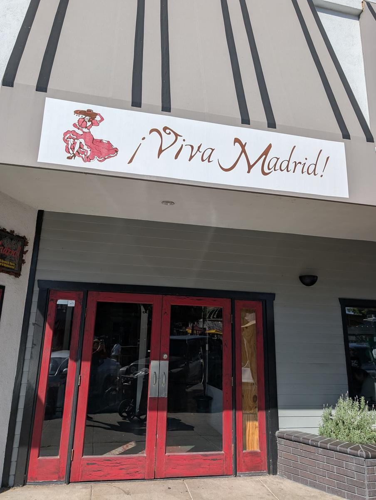
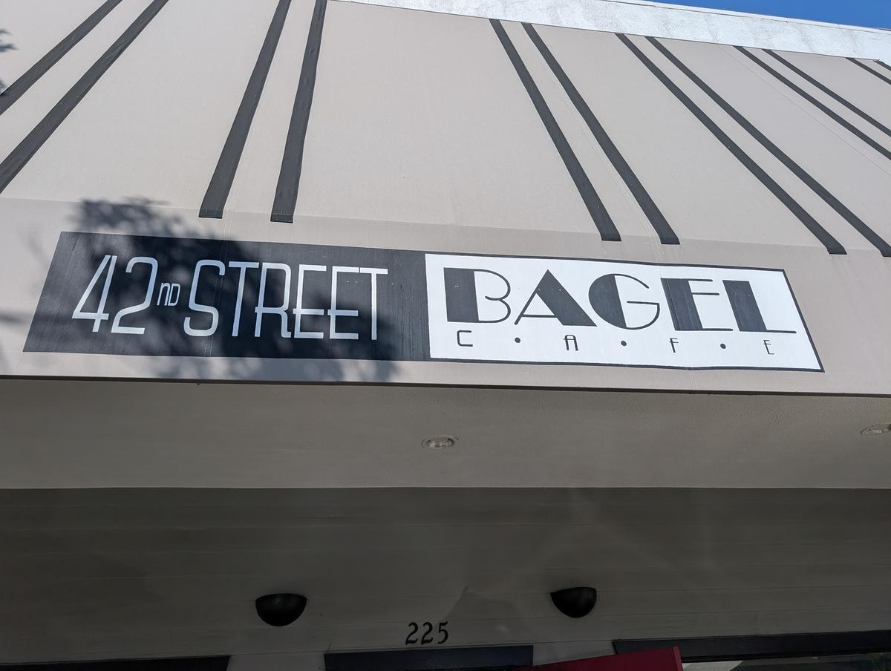

Claremont's dining scene is a high-stakes game of "Gown vs. Town," where historic ivy-covered walls meet modern culinary ambition. Whether you're looking to drop a week's paycheck on a dry-aged ribeye or you just need a $10 bagel to fuel a library session, the Village has a seat for you. Here is your definitive guide to the Claremont dining hierarchy, organized by the weight of your wallet.
The "Splurge" Staples
These are the heavy hitters. If you're celebrating a graduation, an anniversary, or your parents are in town with their "good" credit card, these are the only calls you need to make.
The Meat Cellar
The undisputed king of the Claremont steakhouse scene. Located north of the Village on Foothill, it's all about premium cuts and dry-aged perfection — and it doubles as a full butcher shop, so you can take the good stuff home with you.
The Move: Order the Tomahawk and don't skip the Bone Marrow. It's loud, buzzy, and feels like "Old Claremont" met a modern industrial loft.
Uno Tre Otto
A farm-to-table masterclass tucked away in a charming Village alleyway. This is intimate, high-end Italian that sources much of its produce from its own local farm.
The Move: The handmade pasta is non-negotiable. It's quiet, romantic, and feels like a secret you've been invited to keep.
Bardot
To round out the high-end tier, Bardot brings California-inspired dining with a chic, sophisticated atmosphere. Perfect for when you want a world-class wine list and a memorable meal. It's the "see and be seen" spot of the Village.
The "Mid-Tier" Masterpieces
This is the "Friday Night" sweet spot — sophisticated enough for a date, but casual enough that you don't need to put on a suit.
Kazama Sushi
The Village's premier destination for high-quality fish in a sleek, minimalist environment. It's consistently packed, and for good reason — the fish is incredibly fresh and the presentations are art-gallery ready.
The Move: Sit at the sushi bar and let the chefs guide you through the daily specials.
Casa Maguey
A more elevated, modern-Mexican vibe in the downtown core. It's vibrant, colorful, and serves some of the best margaritas in the city.
The Move: The Enchiladas Suizas or anything featuring their house-made mole.
Viva Madrid
A Claremont institution for over 20 years, Viva Madrid brings authentic Spanish tapas, sangria, and paella to Yale Avenue. It's mid-range if you stick to tapas and drinks, but order the paella or entrees and it becomes a proper splurge — which is exactly why it's a splurge-worthy dinner spot.

Menkoi Ya Ramen
The Village trendsetter for authentic Japanese soul food. A clean, modern space focused on rich broths, perfectly textured noodles, and their signature Toro Chashu — seared to perfection and featured in most bowls.
The Move: The Chashu Spicy Miso Ramen or the Tonkotsu Kotteri with extra pork back fat. Don't skip the takoyaki.
Union on Yale
You can't have a mid-tier guide without the best patio in town. Known for its wood-fired pizzas and creative cocktails, it's the quintessential "Claremont Vibe" restaurant.
The "Quick & Cult" Bites
The practical backbone of Claremont life — fast, reliable, and deeply loved by locals and students alike.
Petiscos
A taco shop with cute outdoor seating and flavors that punch far above its weight class. Small, unpretentious, and exactly the kind of place you bring friends to when you want to show them "your spot."

Oh Poke
The go-to for a healthy, fast-casual lunch on Foothill. Customizable bowls that are fresh and filling — perfect for a grab-and-go meal between classes or errands.
Yocrepe & Boba
The ultimate student sanctuary on Indian Hill. Whether you want a savory breakfast crepe or a sweet Nutella-filled late-night treat paired with their signature boba, it's a Claremont staple for a reason.
42nd Street Bagel
A Claremont institution. On any given weekend morning, the line out the door tells you everything you need to know. It's the only place for a "real" bagel in the 909.

Blaze Pizza
Not fancy, not trying to be. Build-your-own customized pizza, fired fast, and out the door. It's reliable, affordable, and exactly what you need when the budget is tight but you want something better than ramen.
The "Village Shuffle": Parking in the Village on a Friday night is a sport. Your best bet is always the Packing House structure — it's a five-minute walk to almost everywhere on this list.
Reservations: For The Meat Cellar and Uno Tre Otto, don't even try to walk in on a weekend. Book at least 7-10 days in advance, especially during graduation season in May.